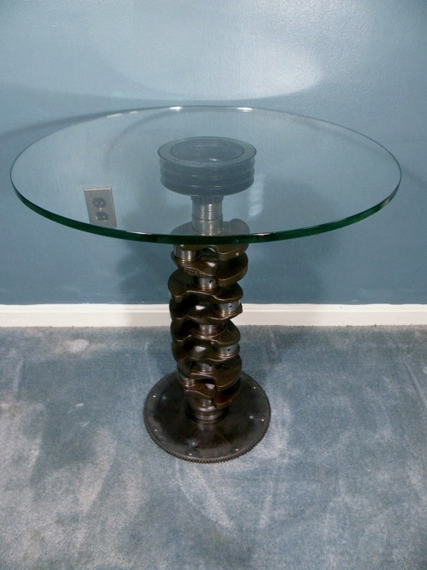
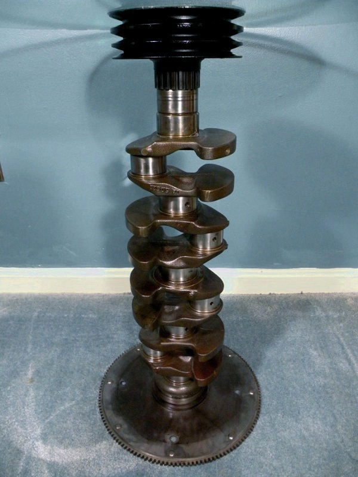
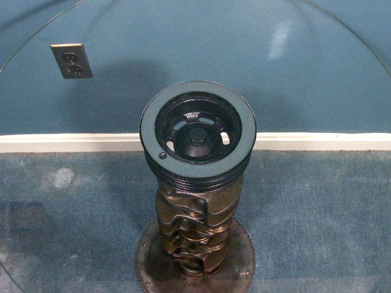
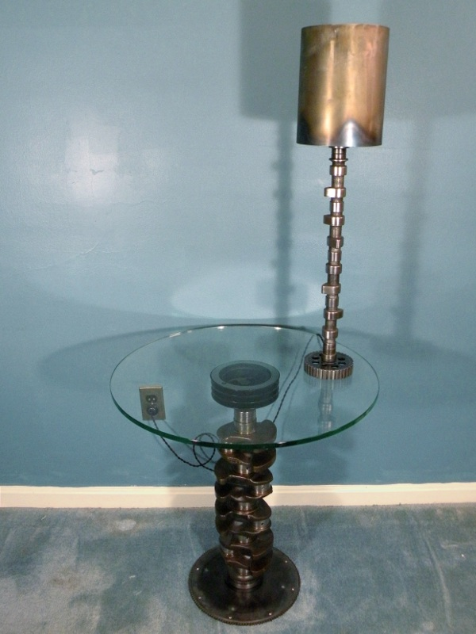

Crankshaft Table Crankshaft Table
Crankshaft Table Crankshaft TableSome time ago, I stripped a rusted-out 1987 Volvo 240 down to the very last bolt and either sold or stored the parts. Many of the parts have been used to keep my own Volvos running, but some parts I will never need, and have very little resale value; like the crankshaft. Following the same muse which inspired the camshaft lamp, I decided to turn the crankshaft into a table.
The table is very simple: It consists of a 24" diameter circle of 1/2" edge-polished glass, the crankshaft and pulley, the timing gear, and the flex plate. The flexplate serves as the base of the table, and the crankshaft pulley supports the table top.
After scrubbing the crankshaft and adjoining parts to remove any built-up sludge and rust, I degreased the parts in a caustic soda bath, dried them, and quickly applied a layer of clear lacquer. (A perfectly clean piece of carbon-steel will rust within minutes in the open air.) The pulley was sprayed with black lacquer, to mimic its original finish.
The entire assembly is exactly as it is installed on the car, except for the flexplate which is upside down; it provided a more stable base that way. Thus, the table not only serves to hold things about 30 inches from the ground, it also serves as an illustration of power transmission in an engine.
The table top is glued to the crankshaft pulley. Glass and steel, both being non-pourous and impermeable, are difficult to glue together. Most glues work, at least partially, through solvent evaporation, wherein a highly volatile fluid such as acetone acts as a carrier for the adhesive substance. In an application such as this, glues which rely upon solvent evaporation work poorly, because the solvent will only evaporate at the edge of the joint. A strong bond will take days or weeks to develop, if it ever does. Two-part epoxy is an option, because it cures through a chemical reaction, however epoxy's bond to glass is not the best, and it cures hard and brittle, with the potential for breakage.
The perfect solution to glue the table top to the pulley was a fairly recently developed glue which cures entirely through the action of ultraviolet light. The glue I used took only 30 seconds exposure to sunlight to develop a bond, and I was picking the table up by the top in 10 minutes! In addition, as the glue is formulated specifically for glass, it cured crystal clear and almost free of bubbles. UV cure adhesives can be very expensive and are often only available through special order in large quantities; however, I found that Super Glue brand's Glass Adhesive is the same substance, and is locally available in small tubes.
As you can see here, the bond bewteen the table top and the pulley is very strong. There is more danger of toppling the entire table by placing very heavy objects near the edge than there is of seperating the glass and metal.
As with the camshaft lamp, I considered the longevity and utility of the table down to the smallest detail. For instance, to simplify moving the table from room to room, or even between houses, the entire thing disssembles. The flexplate unbolts from the bottom, and the pulley unscrews from the top. The center bolt which holds the pulley to the crankshaft is permanently affixed to the pulley, which is, of course, glued to the table top, meaning that the table top can be removed by grasping it like a steering wheel and spinning counterclockwise.
The combination of utility, uniqueness and personal significance makes this one of my favorite pieces of furniture, which I am sure will endure the years better than I.
Created by Sean Corron, April 2, 2011.